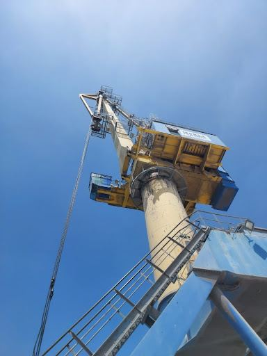
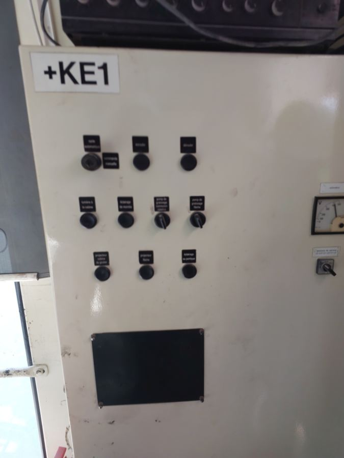
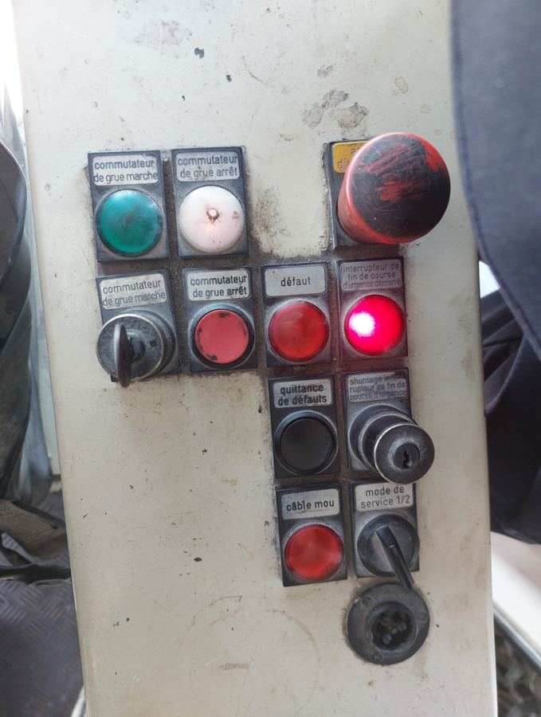
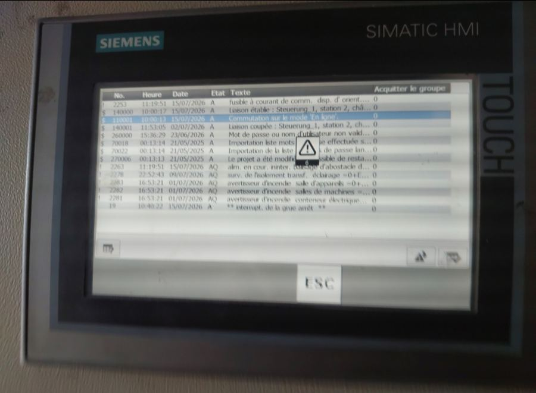
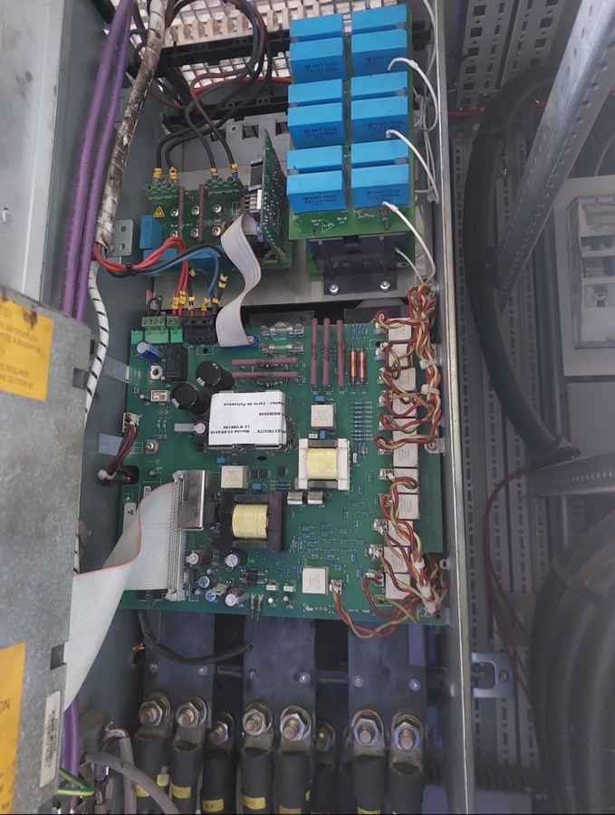
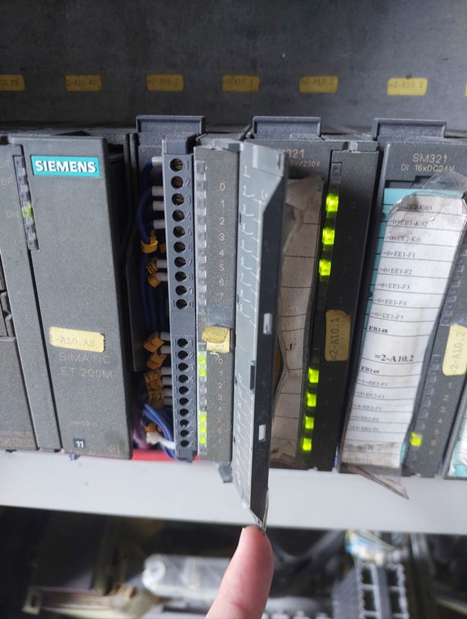

Career development / Internship
Spare parts criticality for a ZPMC crane
Internship at Marsa Maroc, port of Safi, from 6 July to 15 August 2026.
- Context
- Six weeks in the maintenance department of Marsa Maroc in Safi, on a ZPMC crane at the port's sulphur terminal. Supervisors: Mohamed Rojhani and Hassan Belakhdar.
- Problem
- When a part fails and the replacement is not in stock, the crane can stop for weeks. Keeping every part in stock is too expensive, so the team needs to know which parts matter most.
- Method
- A multi-criteria ABC classification. Each part gets a score of 0, 2, 4 or 8 on five criteria, and the sum of the five scores gives its class.
- Skills developed
- Industrial maintenance, criticality analysis, reading technical documentation, and writing a report in LaTeX.
From total score to class
| Class | Criticality | Total score |
|---|---|---|
| d | Low | 0 to 4 |
| B | Moderate | 5 to 14 |
| A | High | 15 to 29 |
| AA | Critical | 30 to 40 |
Results
41spare parts analysed
10rated critical (AA)
31rated high (A)
32highest total score, out of 40
How the 41 parts scored on each criterion
Score 0Score 2Score 4Score 8
Every part is replaced only after a failure, and 29 of the 41 take more than a month to deliver. The highest score went to parts such as the VCM-Manager Master card, the core of the crane's control system: if it fails, the whole crane stops. With this ranking, Marsa Maroc can set its safety stock where a missing part would cost the most.
On site





